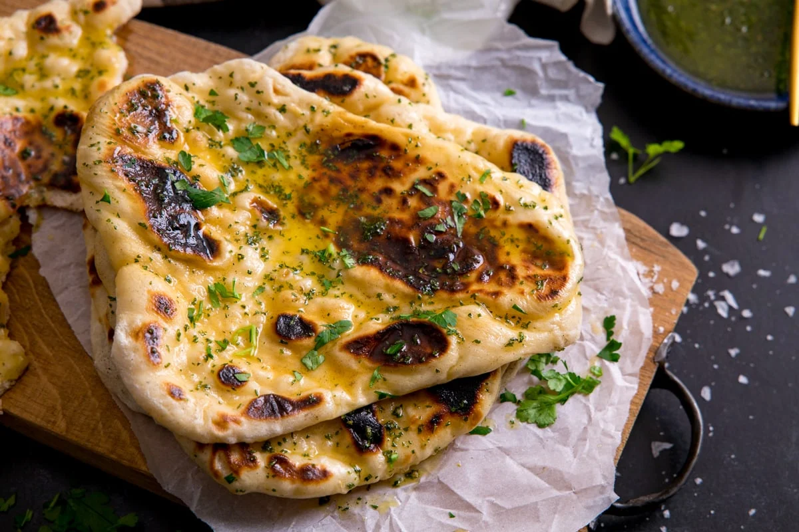

Green Onion Garlic Naan

This green onion garlic naan has become one of my go-to comfort recipes - it's soft, buttery, and packed with flavor from the garlic and fresh green onions.
I started making it when I wanted something a little more exciting than plain naan to go with curries or soups, and now I honestly crave it on its own.
It's pan-cooked, so no fancy oven or tandoor needed, and the smell alone while it's cooking is worth the effort.
Whether you serve it with a meal or just tear into it as a snack, this naan always disappears fast in my kitchen.
General Info:
- Prep Time: 20 mins
- Cook Time: 3 mins
- Rest Time: 15 mins
- Total Time: 38 mins
- Servings: 6
- Yield: 6 Naan breads
Nutrional Facts
- Calories: 282
- Fat: 5g
- Carbs: 53g
- Protein: 10g
Ingredients
- 1.5 cups bread flour, plus more as needed (you can use all-purpose flour instead too)
- 0.5 teaspoon kosher salt
- 2 teaspoons baking powder
- 1 cup plain Greek yogurt
- 4 cloves garlic, crushed
- 0.5 cup thinly sliced green onions
- 2 tablespoons melted butter
Steps
- Place bread flour in a bowl. Add salt and baking powder and give it a good whisk until evenly combined.
- Add in Greek yogurt gently, followed by garlic and green onions.
Take a wooden spoon and slowly start mixing everything together.
Keep mixing, stirring, and pressing until a shaggy dough forms.
-
Transfer dough to a work surface and use your hands to press dough together.
Knead for a few minutes until dough becomes elastic and a little bit sticky.
Add a bit more flour as necessary but try to keep extra flour at an absolute minimum.
Knead until dough is a little bit stretchy, 3 to 5 minutes.
- Wrap in plastic and allow to rest on the counter for 15 to 20 minutes.
-
Take a bench scraper and cut into 6 equal pieces.
Take 1 portion and roll into a ball. Place onto a generously floured surface.
Use a rolling pin to roll out nice and thin, about 1/8 inch or less. It's ok if the naan is not a perfect circle.
You will need extra flour for rolling out as the dough is sticky, but try to use as little as possible.
-
Heat a cast iron skillet over medium-high heat until hot.
Transfer dough circles into the hot dry skillet and cook until little bubbles form on the surface and the underside is lightly browned, about 1 minute.
Flip naan over and cook for 1 more minute. Press down slightly with a spatula to increase the heat during cooking.
Flip over twice more and cook for an additional 15 seconds per side, but make sure not to overcook to preserve the texture.
Naan should still be flexible when you remove it from the skillet onto a plate.
-
Cover with a kitchen towel to keep warm and moist while you cook the other naan breads.
Stack all 6 naan breads on top of each other and keep covered with a kitchen towel.
-
When you are finished cooking all 6 naan breads, unstack breads and brush the first naan bread on both sides with a little bit of melted butter.
Stack second piece of naan on top and only brush the top side.
Keep stacking and buttering all the naan breads. Fold each naan into a triangle and serve.

Recipes